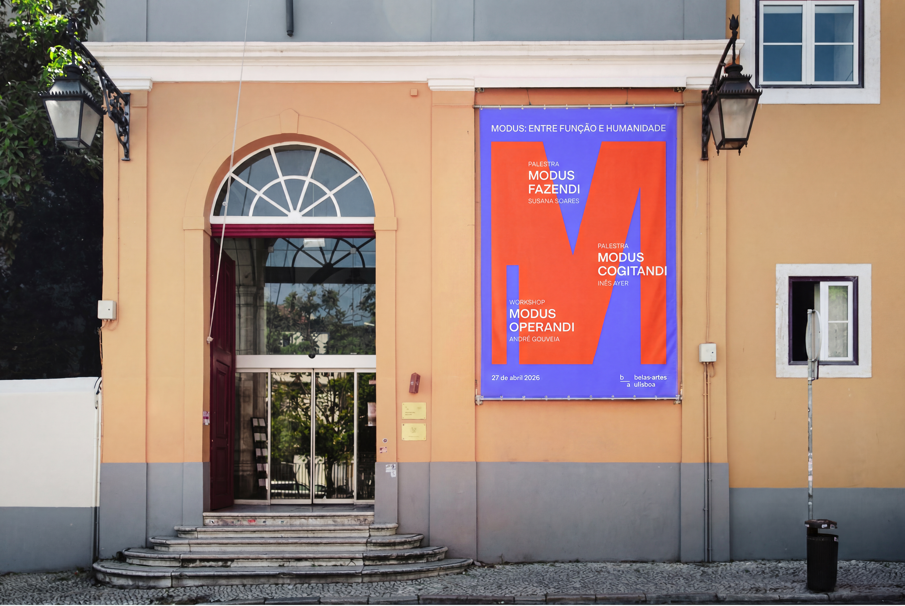
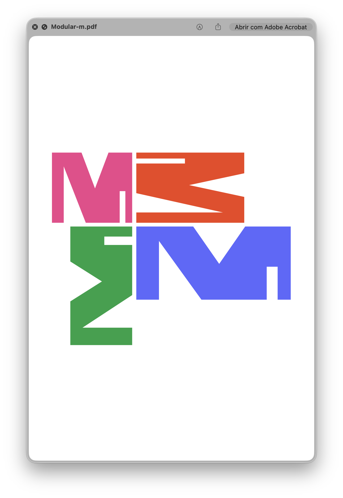
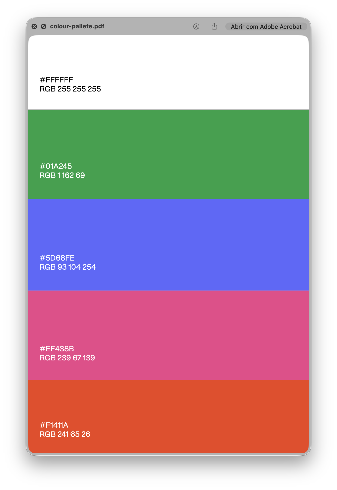
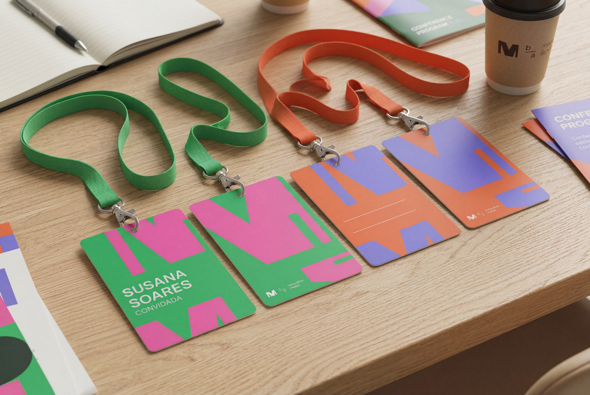
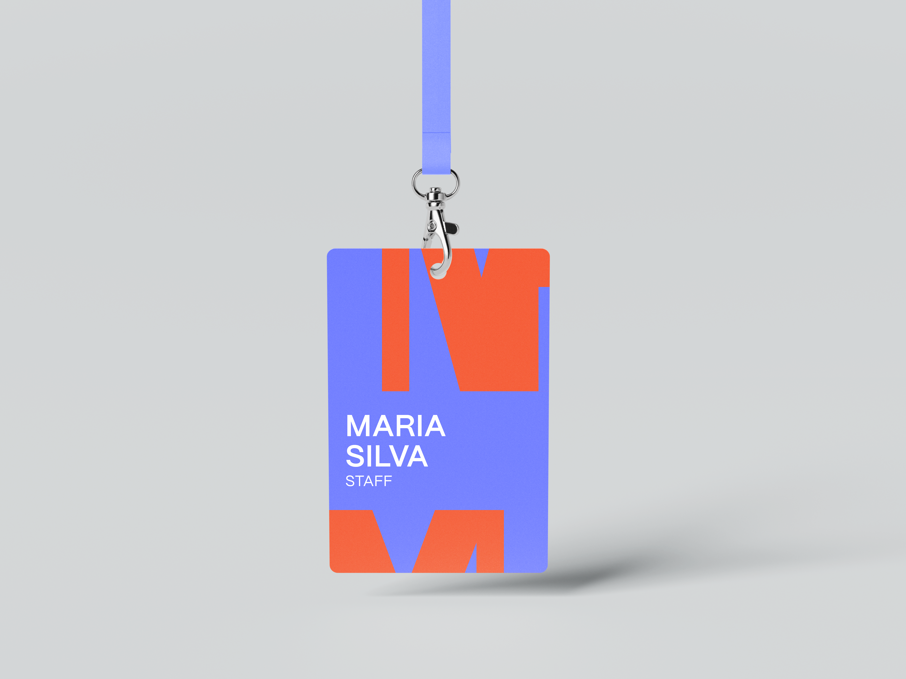
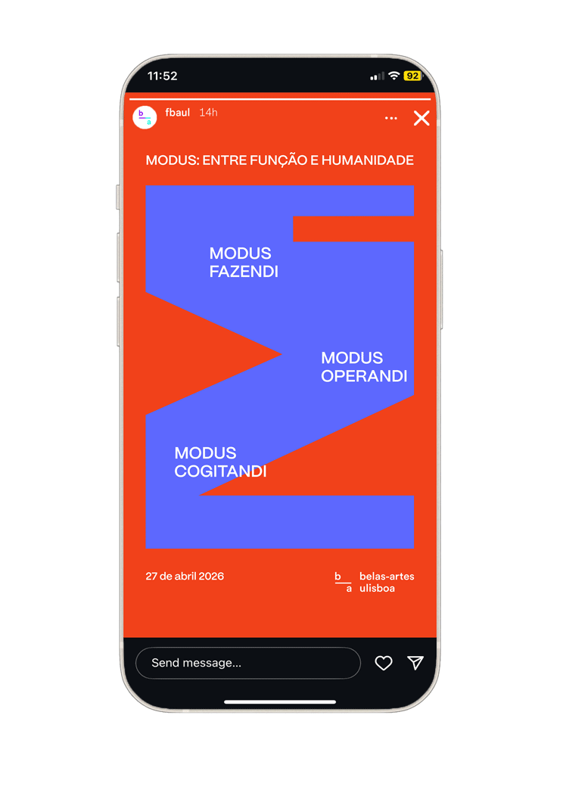
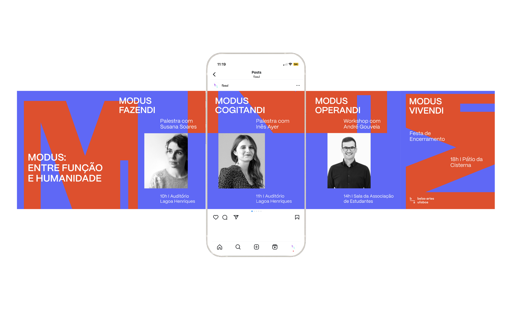

MODUS
MODUS is a fictional event created to celebrate International Design Day through a reflection on the role of design as a practical, human-centered discipline. Inspired by the handmade shepherd's spoon (an object shaped by use, not aesthetics) the event invites discussion on how design can be both rational and empathetic.
The challenge was to develop a visual identity that embodies the idea of design as function over form, a process grounded in context, need, and common sense. Drawing from the philosophy of essential, utilitarian design, the project uses minimal typography, muted colors, and a straightforward layout to reflect clarity, humility, and purpose. MODUS positions design not as decoration, but as a quiet, intelligent response to real human needs.








